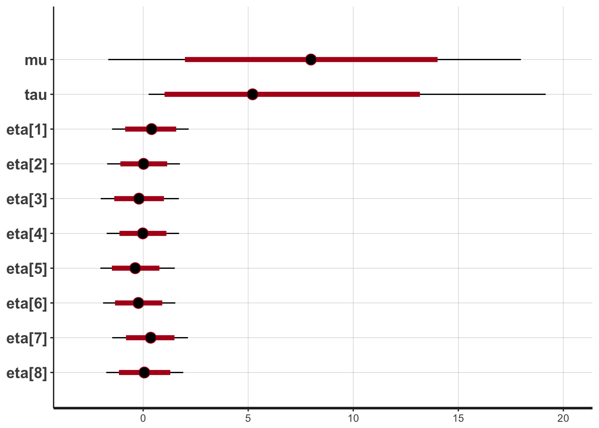
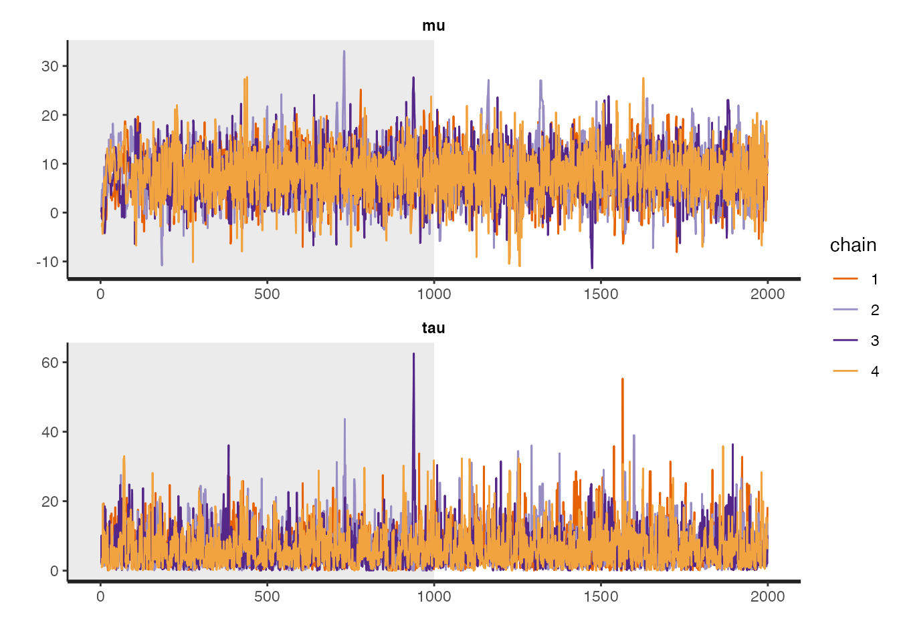
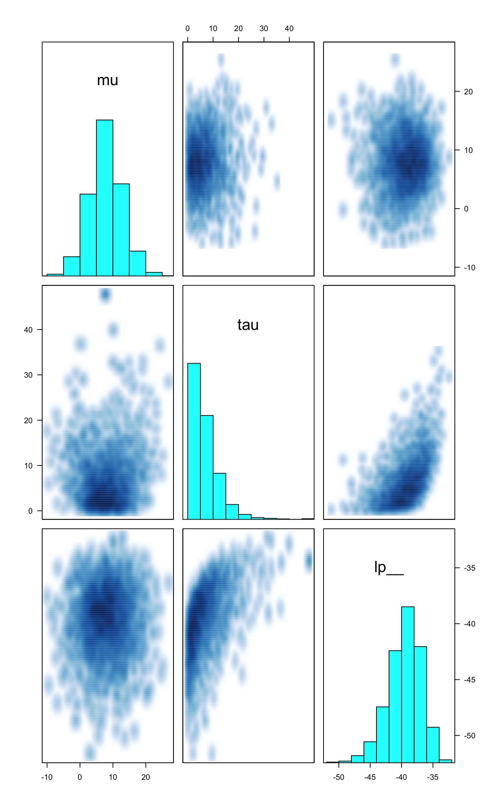

In this vignette we present RStan, the R interface to Stan. Stan is a C++ library for Bayesian inference using the No-U-Turn sampler (a variant of Hamiltonian Monte Carlo) or frequentist inference via optimization. We illustrate the features of RStan through an example in Gelman et al. (2003).
Stan is a C++ library for Bayesian modeling and inference that primarily uses the No-U-Turn sampler (NUTS) (Hoffman and Gelman 2012) to obtain posterior simulations given a user-specified model and data. Alternatively, Stan can utilize the LBFGS optimization algorithm to maximize an objective function, such as a log-likelihood. The R package rstan provides RStan, the R interface to Stan. The rstan package allows one to conveniently fit Stan models from R (R Core Team 2014) and access the output, including posterior inferences and intermediate quantities such as evaluations of the log posterior density and its gradients.
In this vignette we provide a concise introduction to the functionality included in the rstan package. Stan’s website mc-stan.org has additional details and provides up-to-date information about how to operate both Stan and its many interfaces including RStan. See, for example, RStan Getting Started (The Stan Development Team 2014).
Stan has a modeling language, which is similar to but not identical to that of the Bayesian graphical modeling package BUGS (Lunn et al. 2000). A parser translates a model expressed in the Stan language to C++ code, whereupon it is compiled to an executable program and loaded as a Dynamic Shared Object (DSO) in R which can then be called by the user.
A C++ compiler, such as g++ or clang++, is required for this process. For instructions on installing a C++ compiler for use with RStan see RStan-Getting-Started.
The rstan package also depends heavily on several other R packages:
These dependencies should be automatically installed if you install the rstan package via one of the conventional mechanisms.
The following is a typical workflow for using Stan via RStan for Bayesian inference.
.stan extension, although it can also be done using a character string within R.stanc function.Conveniently, steps 2, 3, and 4, above, are all performed implicitly by a single call to the stan function.
Throughout the rest of the vignette we’ll use a hierarchical meta-analysis model described in section 5.5 of Gelman et al. (2003) as a running example. A hierarchical model is used to model the effect of coaching programs on college admissions tests. The data, shown in the table below, summarize the results of experiments conducted in eight high schools, with an estimated standard error for each. These data and model are of historical interest as an example of full Bayesian inference (Rubin 1981). For short, we call this the Eight Schools examples.
| School | Estimate (\(y_j\)) | Standard Error (\(\sigma_j\)) |
|---|---|---|
| A | 28 | 15 |
| B | 8 | 10 |
| C | -3 | 16 |
| D | 7 | 11 |
| E | -1 | 9 |
| F | 1 | 11 |
| G | 18 | 10 |
| H | 12 | 18 |
We use the Eight Schools example here because it is simple but also represents a nontrivial Markov chain simulation problem in that there is dependence between the parameters of original interest in the study — the effects of coaching in each of the eight schools — and the hyperparameter representing the variation of these effects in the modeled population. Certain implementations of a Gibbs sampler or a Hamiltonian Monte Carlo sampler can be slow to converge in this example.
The statistical model of interest is specified as
\[ \begin{aligned} y_j &\sim \mathsf{Normal}(\theta_j, \sigma_j), \quad j=1,\ldots,8 \\ \theta_j &\sim \mathsf{Normal}(\mu, \tau), \quad j=1,\ldots,8 \\ p(\mu, \tau) &\propto 1, \end{aligned} \]
where each \(\sigma_j\) is assumed known.
RStan allows a Stan program to be coded in a text file (typically with suffix .stan) or in a R character vector (of length one). We put the following code for the Eight Schools model into the file schools.stan:
data {
int<lower=0> J; // number of schools
real y[J]; // estimated treatment effects
real<lower=0> sigma[J]; // s.e. of effect estimates
}
parameters {
real mu;
real<lower=0> tau;
vector[J] eta;
}
transformed parameters {
vector[J] theta;
theta = mu + tau * eta;
}
model {
target += normal_lpdf(eta | 0, 1);
target += normal_lpdf(y | theta, sigma);
}The first section of the Stan program above, the data block, specifies the data that is conditioned upon in Bayes Rule: the number of schools, \(J\), the vector of estimates, \((y_1, \ldots, y_J)\), and the vector of standard errors of the estimates \((\sigma_{1}, \ldots, \sigma_{J})\). Data are declared as integer or real and can be vectors (or, more generally, arrays) if dimensions are specified. Data can also be constrained; for example, in the above model \(J\) has been restricted to be at least \(1\) and the components of \(\sigma_y\) must all be positive.
The parameters block declares the parameters whose posterior distribution is sought. These are the the mean, \(\mu\), and standard deviation, \(\tau\), of the school effects, plus the standardized school-level effects \(\eta\). In this model, we let the undstandardized school-level effects, \(\theta\), be a transformed parameter constructed by scaling the the standardized effects by \(\tau\) and shifting them by \(\mu\) rather than directly declaring \(\theta\) as a parameter. By parameterizing the model this way, the sampler runs more efficiently because the resulting multivariate geometry is more amendable to Hamiltonian Monte Carlo (Neal 2011).
Finally, the model block looks similar to standard statistical notation. (Just be careful: the second argument to Stan’s normal\((\cdot,\cdot)\) distribution is the standard deviation, not the variance as is usual in statistical notation.) We have written the model in vector notation, which allows Stan to make use of more efficient algorithmic differentiation (AD). It would also be possible — but less efficient — to write the model by replacing normal_lpdf(y | theta,sigma) with a loop over the \(J\) schools,
for (j in 1:J)
target += normal_lpdf(y[j] | theta[j],sigma[j]);Stan has versions of many of the most useful R functions for statistical modeling, including probability distributions, matrix operations, and various special functions. However, the names of the Stan functions may differ from their R counterparts and, more subtly, the parameterizations of probability distributions in Stan may differ from those in R for the same distribution. To mitigate this problem, the lookup function can be passed an R function or character string naming an R function, and RStan will attempt to look up the corresponding Stan function, display its arguments, and give the page number in The Stan Development Team (2016) where the function is discussed.
lookup("dnorm") StanFunction Arguments ReturnType Page
353 normal_lpdf (reals y | reals mu, reals sigma) real 493
354 normal ~ real 493lookup(dwilcox) # no corresponding Stan function[1] "no matching Stan functions"If the lookup function fails to find an R function that corresponds to a Stan function, it will treat its argument as a regular expression and attempt to find matches with the names of Stan functions.
The stan function accepts data as a named list, a character vector of object names, or an environment. Alternatively, the data argument can be omitted and R will search for objects that have the same names as those declared in the data block of the Stan program. Here is the data for the Eight Schools example:
schools_data <- list(
J = 8,
y = c(28, 8, -3, 7, -1, 1, 18, 12),
sigma = c(15, 10, 16, 11, 9, 11, 10, 18)
)It would also be possible (indeed, encouraged) to read in the data from a file rather than to directly enter the numbers in the R script.
Next, we can call the stan function to draw posterior samples:
library(rstan)
fit1 <- stan(
file = "schools.stan", # Stan program
data = schools_data, # named list of data
chains = 4, # number of Markov chains
warmup = 1000, # number of warmup iterations per chain
iter = 2000, # total number of iterations per chain
cores = 2, # number of cores (using 2 just for the vignette)
refresh = 1000 # show progress every 'refresh' iterations
)Warning: There were 2 divergent transitions after warmup. Increasing adapt_delta above 0.8 may help. See
http://mc-stan.org/misc/warnings.html#divergent-transitions-after-warmupWarning: Examine the pairs() plot to diagnose sampling problemsThe stan function wraps the following three steps:
A single call to stan performs all three steps, but they can also be executed one by one (see the help pages for stanc, stan_model, and sampling), which can be useful for debugging. In addition, Stan saves the DSO so that when the same model is fit again (possibly with new data and settings) we can avoid recompilation. If an error happens after the model is compiled but before sampling (e.g., problems with inputs like data and initial values), we can still reuse the compiled model.
The stan function returns a stanfit object, which is an S4 object of class "stanfit". For those who are not familiar with the concept of class and S4 class in R, refer to Chambers (2008). An S4 class consists of some attributes (data) to model an object and some methods to model the behavior of the object. From a user’s perspective, once a stanfit object is created, we are mainly concerned about what methods are defined.
If no error occurs, the returned stanfit object includes the sample drawn from the posterior distribution for the model parameters and other quantities defined in the model. If there is an error (e.g. a syntax error in the Stan program), stan will either quit or return a stanfit object that contains no posterior draws.
For class "stanfit", many methods such as print and plot are defined for working with the MCMC sample. For example, the following shows a summary of the parameters from the Eight Schools model using the print method:
print(fit1, pars=c("theta", "mu", "tau", "lp__"), probs=c(.1,.5,.9))Inference for Stan model: schools.
4 chains, each with iter=2000; warmup=1000; thin=1;
post-warmup draws per chain=1000, total post-warmup draws=4000.
mean se_mean sd 10% 50% 90% n_eff Rhat
theta[1] 11.33 0.16 8.41 2.30 10.01 22.29 2924 1
theta[2] 7.92 0.10 6.34 0.39 7.82 15.73 4000 1
theta[3] 6.21 0.12 7.89 -3.34 6.77 15.28 4000 1
theta[4] 7.74 0.10 6.58 -0.43 7.80 15.97 4000 1
theta[5] 5.07 0.10 6.37 -3.25 5.63 12.54 4000 1
theta[6] 6.17 0.10 6.56 -2.20 6.47 14.00 4000 1
theta[7] 10.64 0.11 6.67 2.80 9.98 19.27 4000 1
theta[8] 8.52 0.13 7.96 -0.71 8.33 17.92 4000 1
mu 7.94 0.10 5.00 1.55 7.98 14.32 2442 1
tau 6.43 0.13 5.53 0.94 5.09 13.36 1721 1
lp__ -39.66 0.07 2.68 -43.18 -39.40 -36.47 1380 1
Samples were drawn using NUTS(diag_e) at Wed Jul 26 21:53:10 2017.
For each parameter, n_eff is a crude measure of effective sample size,
and Rhat is the potential scale reduction factor on split chains (at
convergence, Rhat=1).The last line of this output, lp__, is the logarithm of the (unnormalized) posterior density as calculated by Stan. This log density can be used in various ways for model evaluation and comparison (see, e.g., Vehtari and Ojanen (2012)).
stan FunctionThe primary arguments for sampling (in functions stan and sampling) include data, initial values, and the options of the sampler such as chains, iter, and warmup. In particular, warmup specifies the number of iterations that are used by the NUTS sampler for the adaptation phase before sampling begins. After the warmup, the sampler turns off adaptation and continues until a total of iter iterations (including warmup) have been completed. There is no theoretical guarantee that the draws obtained during warmup are from the posterior distribution, so the warmup draws should only be used for diagnosis and not inference. The summaries for the parameters shown by the print method are calculated using only post-warmup draws.
The optional init argument can be used to specify initial values for the Markov chains. There are several ways to specify initial values, and the details can be found in the documentation of the stan function. The vast majority of the time it is adequate to allow Stan to generate its own initial values randomly. However, sometimes it is better to specify the initial values for at least a subset of the objects declared in the parameters block of a Stan program.
Stan uses a random number generator (RNG) that supports parallelism. The initialization of the RNG is determined by the arguments seed and chain_id. Even if we are running multiple chains from one call to the stan function we only need to specify one seed, which is randomly generated by R if not specified.
The data passed to stan will go through a preprocessing procedure. The details of this preprocessing are documented in the documentation for the stan function. Here we stress a few important steps. First, RStan allows the user to pass more objects as data than what is declared in the data block (silently omitting any unnecessary objects). In general, an element in list of data passed to Stan from R should be numeric and its dimension should match the declaration in the data block of the model. So for example, the factor type in R is not supported as a data element for RStan and must be converted to integer codes via as.integer. The Stan modeling language distinguishes between integers and doubles (type int and real in Stan modeling language, respectively). The stan function will convert some R data (which is double-precision usually) to integers if possible.
The Stan language has scalars and other types that are sets of scalars, e.g. vectors, matrices, and arrays. As R does not have true scalars, RStan treats vectors of length one as scalars. However, consider a model with a data block defined as
data {
int<lower=1> N;
real y[N];
} in which N can be \(1\) as a special case. So if we know that N is always larger than \(1\), we can use a vector of length N in R as the data input for y (for example, a vector created by y <- rnorm(N)). If we want to prevent RStan from treating the input data for y as a scalar when \(N`\) is \(1\), we need to explicitly make it an array as the following R code shows:
y <- as.array(y)Stan cannot handle missing values in data automatically, so no element of the data can contain NA values. An important step in RStan’s data preprocessing is to check missing values and issue an error if any are found. There are, however, various ways of writing Stan programs that account for missing data (see The Stan Development Team (2016)).
"stanfit" ClassThe other vignette included with the rstan package discusses stanfit objects in greater detail and gives examples of accessing the most important content contained in the objects (e.g., posterior draws, diagnostic summaries). Also, a full list of available methods can be found in the documentation for the "stanfit" class at help("stanfit", "rstan"). Here we give only a few examples.
The plot method for stanfit objects provides various graphical overviews of the output. The default plot shows posterior uncertainty intervals (by default 80% (inner) and 95% (outer)) and the posterior median for all the parameters as well as lp__ (the log of posterior density function up to an additive constant):
plot(fit1)'pars' not specified. Showing first 10 parameters by default.ci_level: 0.8 (80% intervals)outer_level: 0.95 (95% intervals)
The optional plotfun argument can be used to select among the various available plots. See help("plot,stanfit-method").
The traceplot method is used to plot the time series of the posterior draws. If we include the warmup draws by setting inc_warmup=TRUE, the background color of the warmup area is different from the post-warmup phase:
traceplot(fit1, pars = c("mu", "tau"), inc_warmup = TRUE, nrow = 2)
To assess the convergence of the Markov chains, in addition to visually inspecting traceplots we can calculate the split \(\hat{R}\) statistic. Split \(\hat{R}\) is an updated version of the \(\hat{R}\) statistic proposed in Gelman and Rubin (1992) that is based on splitting each chain into two halves. See the Stan manual for more details. The estimated \(\hat{R}\) for each parameter is included as one of the columns in the output from the summary and print methods.
print(fit1, pars = c("mu", "tau"))Inference for Stan model: schools.
4 chains, each with iter=2000; warmup=1000; thin=1;
post-warmup draws per chain=1000, total post-warmup draws=4000.
mean se_mean sd 2.5% 25% 50% 75% 97.5% n_eff Rhat
mu 7.94 0.10 5.00 -1.75 4.63 7.98 11.10 17.82 2442 1
tau 6.43 0.13 5.53 0.24 2.35 5.09 9.04 20.45 1721 1
Samples were drawn using NUTS(diag_e) at Wed Jul 26 21:53:10 2017.
For each parameter, n_eff is a crude measure of effective sample size,
and Rhat is the potential scale reduction factor on split chains (at
convergence, Rhat=1).Again, see the additional vignette on stanfit objects for more details.
The best way to visualize the output of a model is through the ShinyStan interface, which can be accessed via the shinystan R package. ShinyStan facilitates both the visualization of parameter distributions and diagnosing problems with the sampler. The documentation for the shinystan package provides instructions for using the interface with stanfit objects.
In addition to using ShinyStan, it is also possible to diagnose some sampling problems using functions in the rstan package. The get_sampler_params function returns information on parameters related the performance of the sampler:
# all chains combined
sampler_params <- get_sampler_params(fit1, inc_warmup = TRUE)
summary(do.call(rbind, sampler_params), digits = 2) accept_stat__ stepsize__ treedepth__ n_leapfrog__
Min. :0.00 Min. : 0.022 Min. :0.0 Min. : 1
1st Qu.:0.78 1st Qu.: 0.297 1st Qu.:3.0 1st Qu.: 7
Median :0.95 Median : 0.375 Median :3.0 Median : 15
Mean :0.83 Mean : 0.396 Mean :3.4 Mean : 13
3rd Qu.:0.99 3rd Qu.: 0.389 3rd Qu.:4.0 3rd Qu.: 15
Max. :1.00 Max. :14.386 Max. :7.0 Max. :127
divergent__ energy__
Min. :0.0000 Min. :35
1st Qu.:0.0000 1st Qu.:42
Median :0.0000 Median :44
Mean :0.0097 Mean :45
3rd Qu.:0.0000 3rd Qu.:47
Max. :1.0000 Max. :62 # each chain separately
lapply(sampler_params, summary, digits = 2)[[1]]
accept_stat__ stepsize__ treedepth__ n_leapfrog__
Min. :0.00 Min. : 0.034 Min. :0.0 Min. : 1
1st Qu.:0.80 1st Qu.: 0.331 1st Qu.:3.0 1st Qu.: 7
Median :0.95 Median : 0.331 Median :4.0 Median : 15
Mean :0.84 Mean : 0.394 Mean :3.5 Mean : 13
3rd Qu.:0.99 3rd Qu.: 0.394 3rd Qu.:4.0 3rd Qu.: 15
Max. :1.00 Max. :14.386 Max. :7.0 Max. :127
divergent__ energy__
Min. :0.000 Min. :36
1st Qu.:0.000 1st Qu.:42
Median :0.000 Median :44
Mean :0.011 Mean :45
3rd Qu.:0.000 3rd Qu.:47
Max. :1.000 Max. :58
[[2]]
accept_stat__ stepsize__ treedepth__ n_leapfrog__
Min. :0.00 Min. : 0.022 Min. :0.0 Min. : 1
1st Qu.:0.78 1st Qu.: 0.377 1st Qu.:3.0 1st Qu.: 7
Median :0.94 Median : 0.377 Median :3.0 Median : 7
Mean :0.82 Mean : 0.432 Mean :3.3 Mean : 12
3rd Qu.:0.99 3rd Qu.: 0.423 3rd Qu.:4.0 3rd Qu.: 15
Max. :1.00 Max. :13.722 Max. :7.0 Max. :127
divergent__ energy__
Min. :0.0000 Min. :36
1st Qu.:0.0000 1st Qu.:42
Median :0.0000 Median :44
Mean :0.0095 Mean :45
3rd Qu.:0.0000 3rd Qu.:47
Max. :1.0000 Max. :62
[[3]]
accept_stat__ stepsize__ treedepth__ n_leapfrog__
Min. :0.00 Min. :0.042 Min. :0.0 Min. : 1
1st Qu.:0.71 1st Qu.:0.359 1st Qu.:3.0 1st Qu.: 7
Median :0.93 Median :0.375 Median :3.0 Median :15
Mean :0.81 Mean :0.392 Mean :3.3 Mean :13
3rd Qu.:0.98 3rd Qu.:0.375 3rd Qu.:4.0 3rd Qu.:15
Max. :1.00 Max. :7.434 Max. :6.0 Max. :63
divergent__ energy__
Min. :0.000 Min. :35
1st Qu.:0.000 1st Qu.:42
Median :0.000 Median :44
Mean :0.012 Mean :45
3rd Qu.:0.000 3rd Qu.:47
Max. :1.000 Max. :59
[[4]]
accept_stat__ stepsize__ treedepth__ n_leapfrog__
Min. :0.00 Min. :0.044 Min. :0.0 Min. : 1
1st Qu.:0.83 1st Qu.:0.297 1st Qu.:3.0 1st Qu.: 7
Median :0.96 Median :0.297 Median :4.0 Median :15
Mean :0.85 Mean :0.367 Mean :3.5 Mean :14
3rd Qu.:0.99 3rd Qu.:0.391 3rd Qu.:4.0 3rd Qu.:15
Max. :1.00 Max. :5.127 Max. :6.0 Max. :63
divergent__ energy__
Min. :0.0000 Min. :36
1st Qu.:0.0000 1st Qu.:42
Median :0.0000 Median :44
Mean :0.0065 Mean :45
3rd Qu.:0.0000 3rd Qu.:47
Max. :1.0000 Max. :60 Here we see that there are a small number of divergent transitions, which are identified by divergent__ being \(1\). Ideally, there should be no divergent transitions after the warmup phase. The best way to try to eliminate divergent transitions is by increasing the target acceptance probability, which by default is \(0.8\). In this case the mean of accept_stat__ is close to \(0.8\) for all chains, but has a very skewed distribution because the median is near \(0.95\). We could go back and call stan again and specify the optional argument control=list(adapt_delta=0.9) to try to eliminate the divergent transitions. However, sometimes when the target acceptance rate is high, the stepsize is very small and the sampler hits its limit on the number of leapfrog steps it can take per iteration. In this case, it is a non-issue because each chain has a treedepth__ of at most \(7\) and the default is \(10\). But if any treedepth__ were \(11\), then it would be wise to increase the limit by passing control=list(max_treedepth=12) (for example) to stan. See the vignette on stanfit objects for more on the structure of the object returned by get_sampler_params.
We can also make a graphical representation of (much of the) the same information using pairs. The “pairs”" plot can be used to get a sense of whether any sampling difficulties are occurring in the tails or near the mode:
pairs(fit1, pars = c("mu", "tau", "lp__"), las = 1)
In the plot above, the marginal distribution of each selected parameter is included as a histogram along the diagnoal. By default, draws with below-median accept_stat__ (MCMC proposal acceptance rate) are plotted below the diagonal and those with above-median accept_stat__ are plotted above the diagonal (this can be changed using the condition argument). Each off-diagonal square represents a bivariate distribution of the draws for the intersection of the row-variable and the column-variable. Ideally, the below-diagonal intersection and the above-diagonal intersection of the same two variables should have distributions that are mirror images of each other. Any yellow points would indicate transitions where the maximum treedepth__ was hit, and red points indicate a divergent transition.
Stan also permits users to define their own functions that can be used throughout a Stan program. These functions are defined in the functions block. The functions block is optional but, if it exists, it must come before any other block. This mechanism allows users to implement statistical distributions or other functionality that is not currently available in Stan. However, even if the user’s function merely wraps calls to existing Stan functions, the code in the model block can be much more readible if several lines of Stan code that accomplish one (or perhaps two) task(s) are replaced by a call to a user-defined function.
Another reason to utilize user-defined functions is that RStan provides the expose_stan_functions function for exporting such functions to the R global environment so that they can be tested in R to ensure they are working properly. For example,
model_code <-
'
functions {
real standard_normal_rng() {
return normal_rng(0,1);
}
}
model {}
'
expose_stan_functions(stanc(model_code = model_code))
standard_normal_rng(seed = 1)[1] -0.9529876Stan defines the log of the probability density function of a posterior distribution up to an unknown additive constant. We use lp__ to represent the realizations of this log kernel at each iteration (and lp__ is treated as an unknown in the summary and the calculation of split \(\hat{R}\) and effective sample size).
A nice feature of the rstan package is that it exposes functions for calculating both lp__ and its gradients for a given stanfit object. These two functions are log_prob and grad_log_prob, respectively. Both take parameters on the unconstrained space, even if the support of a parameter is not the whole real line. The Stan manual (The Stan Development Team 2016) has full details on the particular transformations Stan uses to map from the entire real line to some subspace of it (and vice-versa).
It maybe the case that the number of unconstrained parameters might be less than the total number of parameters. For example, for a simplex parameter of length \(K\), there are actually only \(K-1\) unconstrained parameters because of the constraint that all elements of a simplex must be nonnegative and sum to one. The get_num_upars method is provided to get the number of unconstrained parameters, while the unconstrain_pars and constrain_pars methods can be used to compute unconstrained and constrained values of parameters respectively. The former takes a list of parameters as input and transforms it to an unconstrained vector, and the latter does the opposite. Using these functions, we can implement other algorithms such as maximum a posteriori estimation of Bayesian models.
RStan also provides an interface to Stan’s optimizers, which can be used to obtain a point estimate by maximizing the (perhaps penalized) likelihood function defined by a Stan program. We illustrate this feature using a very simple example: estimating the mean from samples assumed to be drawn from a normal distribution with known standard deviation. That is, we assume
\[y_n \sim \mathsf{Normal}(\mu,1), \quad n = 1, \ldots, N. \]
By specifying a prior \(p(\mu) \propto 1\), the maximum a posteriori estimator for \(\mu\) is just the sample mean. We don’t need to explicitly code this prior for \(\mu\), as \(p(\mu) \propto 1\) is the default if no prior is specified.
We first create an object of class "stanmodel" and then use the optimizing method, to which data and other arguments can be fed.
ocode <- "
data {
int<lower=1> N;
real y[N];
}
parameters {
real mu;
}
model {
target += normal_lpdf(y | mu, 1);
}
"
sm <- stan_model(model_code = ocode)
y2 <- rnorm(20)mean(y2)[1] -0.2390763optimizing(sm, data = list(y = y2, N = length(y2)), hessian = TRUE)Initial log joint probability = -24.0333
Optimization terminated normally:
Convergence detected: gradient norm is below tolerance$par
mu
-0.2390763
$value
[1] -22.11149
$return_code
[1] 0
$hessian
mu
mu -20As mentioned earlier in the vignette, Stan programs are written in the Stan modeling language, translated to C++ code, and then compiled to a dynamic shared object (DSO). The DSO is then loaded by R and executed to draw the posterior sample. The process of compiling C++ code to DSO sometimes takes a while. When the model is the same, we can reuse the DSO from a previous run. The stan function accepts the optional argument fit, which can be used to pass an existing fitted model object so that the compiled model is reused. When reusing a previous fitted model, we can still specify different values for the other arguments to stan, including passing different data to the data argument.
In addition, if fitted models are saved using functions like save and save.image, RStan is able to save DSOs, so that they can be used across R sessions. To avoid saving the DSO, specify save_dso=FALSE when calling the stan function.
If the user executes rstan_options(auto_write = TRUE), then a serialized version of the compiled model will be automatically saved to the hard disk in the same directory as the .stan file or in R’s temporary directory if the Stan program is expressed as a character string. Although this option is not enabled by default due to CRAN policy, it should ordinarily be specified by users in order to eliminate redundant compilation.
Stan runs much faster when the code is compiled at the maximum level of optimization, which is -O3 on most C++ compilers. However, the default value is -O2 in R, which is appropriate for most R packages but entails a slight slowdown for Stan. You can change this default locally by following the instructions at CRAN - Customizing-package-compilation. However, you should be advised that setting CXXFLAGS = -O3 may cause adverse side effects for other R packages.
See the documentation for the stanc and stan_model functions for more details on the parsing and compilation of Stan programs.
The number of Markov chains to run can be specified using the chains argument to the stan or sampling functions. By default, the chains are executed serially (i.e., one at a time) using the parent R process. There is also an optional cores argument that can be set to the number of chains (if the hardware has sufficient processors and RAM), which is appropriate on most laptops. We typically recommend first calling options(mc.cores=parallel::detectCores()) once per R session so that all available cores can be used without needing to manually specify the cores argument.
For users working with a different parallelization scheme (perhaps with a remote cluster), the rstan package provides a function called sflist2stanfit for consolidating a list of multiple stanfit objects (created from the same Stan program and using the same number of warmup and sampling iterations) into a single stanfit object. It is important to specify the same seed for all the chains and equally important to use a different chain ID (argument chain_id), the combination of which ensures that the random numbers generated in Stan for all chains are essentially independent. This is handled automatically (internally) when \(`cores` > 1\).
The rstan package provides some functions for creating data for and reading output from CmdStan, the command line interface to Stan.
First, when Stan reads data or initial values, it supports a subset of the syntax of R dump data formats. So if we use the dump function in base R to prepare data, Stan might not be able to read the contents. The stan_rdump function in rstan is designed to dump the data from R to a format that is supported by Stan, with symantics that are very similar to the dump function.
Second, the read_stan_csv function creates a stanfit object from reading the CSV files generated by CmdStan. The resulting stanfit object is compatible with the various methods for diagnostics and posterior analysis.
stan_demo function, which can be used to fit many of the example models in the manual.glmer-style interface to Stan.Chambers, John M. 2008. Software for Data Analysis : Programming with R. New York: Springer.
Gelman, Andrew, and Donald B. Rubin. 1992. “Inference from Iterative Simulation Using Multiple Sequences.” Statistical Science 7 (4): 457–72.
Gelman, Andrew, J. B. Carlin, Hal S. Stern, and Donald B. Rubin. 2003. Bayesian Data Analysis. 2nd ed. London: CRC Press.
Hoffman, Matthew D., and Andrew Gelman. 2012. “The No-U-Turn Sampler: Adaptively Setting Path Lengths in Hamiltonian Monte Carlo.” Journal of Machine Learning Research.
Lunn, D.J., A. Thomas, N. Best, and D. Spiegelhalter. 2000. “WinBUGS — a Bayesian Modelling Framework: Concepts, Structure, and Extensibility.” Statistics and Computing, 325–37.
Neal, Radford. 2011. “MCMC Using Hamiltonian Dynamics.” In Handbook of Markov Chain Monte Carlo, edited by Steve Brooks, Andrew Gelman, Galin L. Jones, and Xiao-Li Meng, 116–62. Chapman; Hall/CRC.
R Core Team. 2014. R: A Language and Environment for Statistical Computing. Vienna, Austria: R Foundation for Statistical Computing. https://www.R-project.org/.
Rubin, Donald B. 1981. “Estimation in Parallel Randomized Experiments.” Journal of Educational and Behavioral Statistics 6 (4): 377–401.
The Stan Development Team. 2014. “RStan Getting Started.” http://mc-stan.org/.
———. 2016. Stan Modeling Language: User’s Guide and Reference Manual. http://mc-stan.org.
Vehtari, A., and J. Ojanen. 2012. “A Survey of Bayesian Predictive Methods for Model Assessment, Selection and Comparison.” Statistics Surveys 6: 142–228.